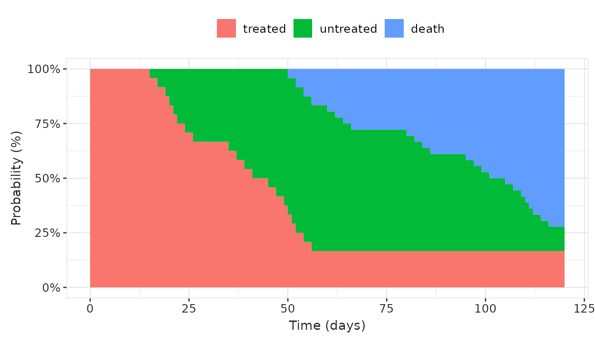
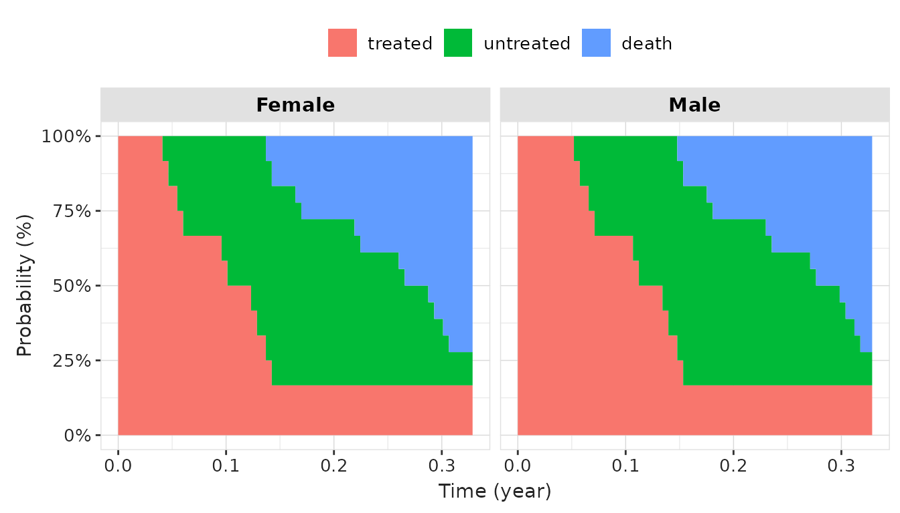
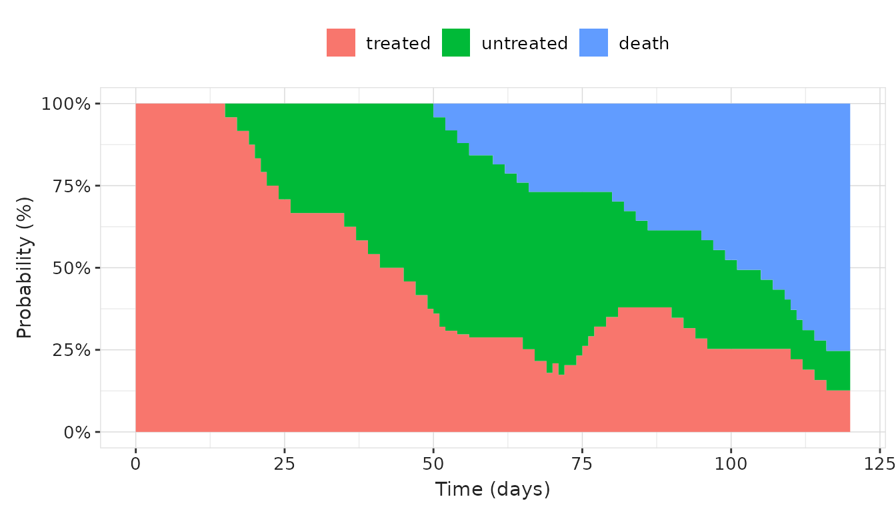

OmopMultistate models movement between states represented by OMOP CDM
cohorts. You create the cohorts (states) and define when people enter
each state (usually cohort_start_date) and then you provide
which transitions are possible. The package prepares the data, estimates
state occupation probabilities, and returns results that can be
inspected, filtered, and plotted. Further methods can be used as the
output is an msdata object that can be further used for
modelling.
| Function | Purpose |
|---|---|
transMat() |
Define the permitted transitions between named states. |
prepareMultistateData() |
Create intervals and transition indicators for modelling. |
summariseMultistateProbabilities() |
Prepare the data and estimate probabilities. |
tidy() |
Extract probability estimates in a readable table. |
settings() |
Inspect the analysis settings attached to a result. |
plotMultistateProbabilities() |
Plot state occupation probabilities over time. |
The examples below use invented histories stored in local data
frames. They require no data download or database connection as they use
synthetic data provided by the omock package. For an existing
OMOP CDM, provide a cohort_table with the same structure,
for example one created with CohortConstructor.
State records are collected into R for processing.
Example 1: treatment, discontinuation, and death
Create the state cohorts
We start with three states: treated,
untreated, and death. Each row marks entry
into a state. The cohort definition identifies the state and
subject_id identifies the person. By default,
cohort_start_date is the entry date;
cohort_end_date alone does not create an exit or a
transition. For treatment episodes, construct an explicit
discontinuation cohort if you want treatment end to create entry into
the untreated state.
These eight example histories include direct deaths, discontinuations, people who start untreated, and people censored without an event. Days are relative to 1 January 2020.
indexDate <- as.Date("2020-01-01")
paths <- tribble(
~person, ~cohort_definition_id, ~day,
1L, 1L, 0L,
1L, 2L, 20L,
1L, 3L, 80L,
2L, 1L, 0L,
2L, 3L, 50L,
3L, 1L, 0L,
3L, 2L, 35L,
4L, 1L, 0L,
4L, 2L, 15L,
4L, 3L, 95L,
5L, 2L, 0L,
5L, 3L, 105L,
6L, 2L, 0L,
6L, 3L, 60L,
7L, 1L, 0L,
8L, 1L, 0L,
8L, 2L, 45L,
8L, 3L, 110L
)To support the stratified examples later, repeat these histories in four groups, with small differences in event dates. The helper below creates 32 people, with eight in each sex and age-group combination. Observation ends on day 120 for everyone. We also add an administrative censor date on day 75 for a later example.
expandPaths <- function(x) {
tidyr::crossing(block = 1:4, x) |>
mutate(
subject_id = as.integer((block - 1L) * 8L + person),
cohort_start_date = indexDate +
if_else(day == 0L, 0L, day + 2L * (block - 1L)),
cohort_end_date = cohort_start_date,
sex = if_else(block <= 2L, "Female", "Male"),
age_group = if_else(block %% 2L == 1L, "younger", "older"),
administrative_censor_date = indexDate + 75L
) |>
select(
cohort_definition_id, subject_id, cohort_start_date, cohort_end_date,
sex, age_group, administrative_censor_date
)
}
cohort <- expandPaths(paths)
observationPeriod <- tibble(
observation_period_id = 1:32,
person_id = 1:32,
observation_period_start_date = indexDate - 30L,
observation_period_end_date = indexDate + 120L,
period_type_concept_id = 0L
)
cdm <- mockCdmFromTables(tables = list(
states = cohort,
observation_period = observationPeriod
))
cdm$states <- renameCohort(cdm$states, c("treated", "untreated", "death"))
settings(cdm$states) |>
knitr::kable()| cohort_definition_id | cohort_name |
|---|---|
| 1 | treated |
| 2 | untreated |
| 3 | death |
Here settings(cdm$states) describes the input
cohorts, including their names and identifiers. Later,
settings(result) will describe the
analysis.
Define permitted transitions
In this first model, people can discontinue treatment or die while treated, and untreated people can die. Restarting treatment is excluded from this model. Death is absorbing.
trans <- transMat(
x = list(c(2, 3), c(3), integer()),
names = c("treated", "untreated", "death")
)
trans
#> to
#> from treated untreated death
#> treated NA 1 2
#> untreated NA NA 3
#> death NA NA NARows are origin states and columns are destinations. A number
identifies a permitted transition. NA forbids a transition,
and a row containing only NA defines an absorbing state.
Use state names that match the cohort names.
Prepare intervals for modelling
Time zero is each person’s earliest entry into a state with an
outgoing transition. In this example, people can start in
treated or untreated. Someone recorded only in
death has no eligible initial state.
hierarchy <- c("treated", "untreated", "death")
msData <- prepareMultistateData(
cohort = cdm$states,
trans = trans,
stateHierarchy = hierarchy
)
msData |>
filter(subject_id == 1L) |>
knitr::kable()| subject_id | from | to | trans | Tstart | Tstop | status | from_name | to_name |
|---|---|---|---|---|---|---|---|---|
| 1 | 1 | 2 | 1 | 0 | 20 | 1 | treated | untreated |
| 1 | 1 | 3 | 2 | 0 | 20 | 0 | treated | death |
| 1 | 2 | 3 | 3 | 20 | 80 | 1 | untreated | death |
The prepared data have class msdata, suitable for the
mstate workflow. They contain one row per possible outgoing
transition for each interval:
| Column | Meaning |
|---|---|
subject_id |
Person identifier. |
from, to
|
Integer state identifiers, in transition-matrix order. |
from_name, to_name
|
Corresponding state names. |
trans |
Transition identifier from the matrix. |
Tstart, Tstop
|
Interval boundaries in days since that person’s time zero. |
status |
1 if this transition occurred at
Tstop; otherwise 0. |
Person 1 starts treated and discontinues on day 20. Their first
interval therefore has two rows: one for discontinuation
(status = 1) and one for death (status = 0).
They then remain untreated until death on day 80. Counting rows would
count possible transitions, rather than people.
Use eventDate = "your_date_column" if state entries are
stored in a different date column. The column must be present in the
input cohort table.
Estimate and interpret probabilities
summariseMultistateProbabilities() prepares the
intervals internally, so you can call it directly on the cohort
table.
result <- summariseMultistateProbabilities(
cohort = cdm$states,
trans = trans,
followUpDays = 120,
stateHierarchy = hierarchy
)
probabilities <- tidy(result)
probabilities |>
filter(variable_level == "0") |>
knitr::kable()| cdm_name | initial_state | variable_name | variable_level | probability | cohort_table_name | follow_up_days | state_hierarchy | state_step | transitions |
|---|---|---|---|---|---|---|---|---|---|
| mock database | overall | prob_treated | 0 | 0.75 | states | 120 | treated;untreated;death | 0.01 | treated->death; treated->untreated; untreated->death |
| mock database | overall | prob_untreated | 0 | 0.25 | states | 120 | treated;untreated;death | 0.01 | treated->death; treated->untreated; untreated->death |
| mock database | overall | prob_death | 0 | 0.00 | states | 120 | treated;untreated;death | 0.01 | treated->death; treated->untreated; untreated->death |
| mock database | treated | prob_treated | 0 | 1.00 | states | 120 | treated;untreated;death | 0.01 | treated->death; treated->untreated; untreated->death |
| mock database | untreated | prob_treated | 0 | 0.00 | states | 120 | treated;untreated;death | 0.01 | treated->death; treated->untreated; untreated->death |
| mock database | death | prob_treated | 0 | 0.00 | states | 120 | treated;untreated;death | 0.01 | treated->death; treated->untreated; untreated->death |
| mock database | treated | prob_untreated | 0 | 0.00 | states | 120 | treated;untreated;death | 0.01 | treated->death; treated->untreated; untreated->death |
| mock database | untreated | prob_untreated | 0 | 1.00 | states | 120 | treated;untreated;death | 0.01 | treated->death; treated->untreated; untreated->death |
| mock database | death | prob_untreated | 0 | 0.00 | states | 120 | treated;untreated;death | 0.01 | treated->death; treated->untreated; untreated->death |
| mock database | treated | prob_death | 0 | 0.00 | states | 120 | treated;untreated;death | 0.01 | treated->death; treated->untreated; untreated->death |
| mock database | untreated | prob_death | 0 | 0.00 | states | 120 | treated;untreated;death | 0.01 | treated->death; treated->untreated; untreated->death |
| mock database | death | prob_death | 0 | 1.00 | states | 120 | treated;untreated;death | 0.01 | treated->death; treated->untreated; untreated->death |
The return value is an omopgenerics
summarised_result object. After tidy():
-
variable_nameidentifies the destination state, such asprob_untreated. -
variable_levelcontains elapsed days as character values. Convert it to numeric before sorting or comparing times numerically. -
probabilityis a proportion between zero and one. -
initial_stateis the conditioning state."overall"combines the conditional estimates using the observed starting-state proportions.
At time zero, 24 of the 32 people are treated and eight are
untreated, so the overall distribution is 0.75 treated and 0.25
untreated. Conditioning on treated instead starts everyone
in that state. The conditional output also includes absorbing initial
states, even though people recorded only in an absorbing state cannot
enter the analysis population.
These are probabilities of occupying each state at a
given time. The package fits transition-specific baseline hazards with
survival::coxph(), clusters by person, uses Breslow
handling of ties, and obtains probabilities with
mstate::msfit() and mstate::probtrans().
Confidence intervals are not included in the returned result.
result |>
filterGroup(initial_state == "treated") |>
plotMultistateProbabilities()
The plot stacks all destination states in transition-matrix order.
Filter the initial state or population while retaining all destination
states to show the complete probability distribution. Plotting requires
the suggested packages visOmopResults,
ggplot2, and scales.
Retrieve the prepared data from a result
The prepared data are attached to the original result as the
ms_data attribute. Retrieve them without running
preparation again:
msDataFromResult <- attr(result, "ms_data")
identical(msDataFromResult, msData)
#> [1] TRUE
msDataFromResult |>
summarise(
people = n_distinct(subject_id),
intervals = n_distinct(subject_id, Tstart, Tstop),
observed_transitions = sum(status == 1)
) |>
knitr::kable()| people | intervals | observed_transitions |
|---|---|---|
| 32 | 48 | 40 |
attr(msDataFromResult, "trans")
#> to
#> from treated untreated death
#> treated NA 1 2
#> untreated NA NA 3
#> death NA NA NAThe final expression retrieves the original transition matrix from
the prepared data. You can inspect individual trajectories or use the
data in a separate modelling workflow. tidy(result)
contains probability estimates; it does not turn these individual
records into probability-table rows.
Retrieve the attribute from the original result before combining or exporting summary tables. An RDS file preserves the original result and its attributes:
Inspect and filter analysis settings
settings(result) returns one row per result identifier.
This makes it possible to inspect the analysis specification alongside
the probabilities.
analysisSettings <- settings(result)
analysisSettings |>
select(-result_id) |>
tidyr::pivot_longer(everything(), names_to = "setting", values_to = "value") |>
knitr::kable()| setting | value |
|---|---|
| result_type | summarise_multistate_probabilities |
| package_name | OmopMultistate |
| package_version | 0.1.0 |
| group | initial_state |
| strata | |
| additional | |
| min_cell_count | 0 |
| cohort_table_name | states |
| follow_up_days | 120 |
| state_hierarchy | treated;untreated;death |
| state_step | 0.01 |
| transitions | treated->death; treated->untreated; untreated->death |
The package records the following settings:
| Setting | Meaning |
|---|---|
result_type |
summarise_multistate_probabilities. |
package_name,
package_version
|
Package and version used for the analysis. |
cohort_table_name |
Name of the source cohort table. |
follow_up_days |
Requested output horizon from
followUpDays, stored as character; "Inf" means
no output limit. |
state_hierarchy |
State priority order, separated by semicolons. |
state_step |
Increment in days used to separate tied states. |
transitions |
Permitted origin-to-destination pairs, separated by semicolons. |
The settings table also contains standard omopgenerics
metadata such as group, strata,
additional, and min_cell_count.
result_id links a settings row to its rows in the
underlying summarised_result.
transitions describes the allowed
transitions; it is not a count of observed transitions. For the matrix
with transition identifiers, use
attr(msDataFromResult, "trans"). To count observed
transitions instead:
msDataFromResult |>
filter(status == 1) |>
count(from_name, to_name, name = "events") |>
knitr::kable()| from_name | to_name | events |
|---|---|---|
| treated | death | 4 |
| treated | untreated | 16 |
| untreated | death | 20 |
The names of the eventDate and censorDate
columns are not currently recorded as named analysis settings. Retain
the analysis call alongside the result to document those choices.
Example 2: output horizons and censor dates
Limit the time points returned
followUpDays limits the probability time points returned
after fitting. It does not shorten the prepared
intervals or change the fitted model. Time points come from the model,
rather than a daily grid; a row at exactly the requested horizon is not
guaranteed.
shortResult <- summariseMultistateProbabilities(
cohort = cdm$states,
trans = trans,
followUpDays = 75,
stateHierarchy = hierarchy
)
identical(attr(shortResult, "ms_data"), attr(result, "ms_data"))
#> [1] TRUECombine results from different specifications with
omopgenerics::bind(). Use filterSettings() to
select an analysis by its recorded settings:
combined <- omopgenerics::bind(result, shortResult)
settings(combined) |>
select(result_id, follow_up_days, cohort_table_name) |>
knitr::kable()| result_id | follow_up_days | cohort_table_name |
|---|---|---|
| 1 | 120 | states |
| 2 | 75 | states |
selected <- filterSettings(combined, follow_up_days == "75")
settings(selected) |>
select(result_id, follow_up_days) |>
knitr::kable()| result_id | follow_up_days |
|---|---|
| 2 | 75 |
Change the actual follow-up endpoint
To censor follow-up on day 75, supply a date column through
censorDate. Here the column was added to every state record
when constructing the cohort.
administrativeResult <- summariseMultistateProbabilities(
cohort = cdm$states,
trans = trans,
censorDate = "administrative_censor_date",
followUpDays = 75,
stateHierarchy = hierarchy
)
#> ℹ 16 records excluded: event occurred after censor
#> date.
tibble(
analysis = c("Output limited to 75 days", "Follow-up censored at 75 days"),
last_interval_end = c(
max(attr(shortResult, "ms_data")$Tstop),
max(attr(administrativeResult, "ms_data")$Tstop)
)
) |>
knitr::kable()| analysis | last_interval_end |
|---|---|
| Output limited to 75 days | 120 |
| Follow-up censored at 75 days | 75 |
The first analysis still uses follow-up through day 120; the second
removes later events and ends intervals at day 75. Events on the censor
date are retained. With censorDate = NULL,
observation-period end supplies the endpoint. Missing dates in a
supplied column also fall back to observation end. Custom dates replace
the observation-based dates and are not automatically capped at
observation end. Set a consistent endpoint across a person’s state
records; after removing events beyond their censor dates, the latest
remaining censor date is used for that person’s trajectory.
Example 3: stratified analyses
Use strata to fit separate models for different
populations. Each strata column must be constant within a person across
all state records. Missing values are labelled
"Missing".
byStrata <- summariseMultistateProbabilities(
cohort = cdm$states,
trans = trans,
strata = list("sex", c("sex", "age_group")),
followUpDays = 120,
stateHierarchy = hierarchy
)
tidy(byStrata) |>
distinct(sex, age_group) |>
knitr::kable()| sex | age_group |
|---|---|
| overall | overall |
| Female | overall |
| Male | overall |
| Female | older |
| Female | younger |
| Male | older |
| Male | younger |
This requests an unstratified analysis, analyses by sex, and analyses
by sex and age group jointly. "overall" in a strata column
identifies a dimension that was not used for that model. For example,
sex = "Female" with age_group = "overall"
refers to all females, across age groups.
initial_state = "overall" has a different meaning: it
weights the initial states within the model population. The
initial-state weights are recalculated for each stratum.
Use filterStrata() for populations and
filterGroup() for the conditioning state. The following
compares females and males, combining age groups:
byStrata |>
filterStrata(sex != "overall", age_group == "overall") |>
filterGroup(initial_state == "treated") |>
plotMultistateProbabilities(timeScale = "years")
Changing timeScale converts the plot axis from days to
years by dividing by 365.25; the analysis and returned probability times
stay in days. Varying result columns create separate panels.
The attached data include all requested strata columns. To inspect the prepared data for one population, subset them explicitly:
msDataByStrata <- attr(byStrata, "ms_data")
msDataByStrata |>
filter(sex == "Female", age_group == "older") |>
distinct(subject_id, sex, age_group) |>
knitr::kable()| subject_id | sex | age_group |
|---|---|---|
| 9 | Female | older |
| 10 | Female | older |
| 11 | Female | older |
| 12 | Female | older |
| 13 | Female | older |
| 14 | Female | older |
| 15 | Female | older |
| 16 | Female | older |
| result_id | group | strata | follow_up_days |
|---|---|---|---|
| 1 | initial_state | sex &&& age_group | 120 |
If model fitting fails for a stratum, the function prints an informational message naming that stratum and the underlying error. That stratum contributes no probability rows; other successful models are retained.
Example 4: treatment discontinuation and restarting
To allow repeated visits, include a return transition in the matrix and provide the corresponding state-entry records. Here we add restarts for people with histories 1, 3, and 8 in each group. Some discontinue again.
restartPaths <- tribble(
~person, ~cohort_definition_id, ~day,
1L, 1L, 50L,
1L, 2L, 65L,
3L, 1L, 70L,
3L, 2L, 90L,
8L, 1L, 75L
)
recurrentCdm <- mockCdmFromTables(tables = list(
states = bind_rows(cohort, expandPaths(restartPaths)),
observation_period = observationPeriod
))
recurrentCdm$states <- renameCohort(
recurrentCdm$states, c("treated", "untreated", "death")
)
recurrentTrans <- transMat(
x = list(c(2, 3), c(1, 3), integer()),
names = c("treated", "untreated", "death")
)
recurrentTrans
#> to
#> from treated untreated death
#> treated NA 1 2
#> untreated 3 NA 4
#> death NA NA NA
recurrentResult <- summariseMultistateProbabilities(
cohort = recurrentCdm$states,
trans = recurrentTrans,
followUpDays = 120,
stateHierarchy = hierarchy
)
attr(recurrentResult, "ms_data") |>
filter(subject_id == 1L, status == 1) |>
select(from_name, to_name, Tstart, Tstop, status) |>
knitr::kable()| from_name | to_name | Tstart | Tstop | status |
|---|---|---|---|---|
| treated | untreated | 0 | 20 | 1 |
| untreated | treated | 20 | 50 | 1 |
| treated | untreated | 50 | 65 | 1 |
| untreated | death | 65 | 80 | 1 |
Person 1 now follows
treated -> untreated -> treated -> untreated -> death.
The state occupation probabilities include these repeated visits. In
particular, the probability of being untreated at a time is not the
cumulative probability of ever discontinuing treatment. Transition
identifiers can change when the matrix changes, so use the matrix
attached to each analysis.
recurrentResult |>
filterGroup(initial_state == "treated") |>
plotMultistateProbabilities()
Example 5: same-day states and exclusions
Order states recorded on the same date
For this person, discontinuation and death are recorded on day 20, which is also the end of observation.
tieCdm <- mockCdmFromTables(tables = list(
states = tibble(
cohort_definition_id = 1:3,
subject_id = 1L,
cohort_start_date = indexDate + c(0L, 20L, 20L),
cohort_end_date = cohort_start_date
),
observation_period = tibble(
observation_period_id = 1L,
person_id = 1L,
observation_period_start_date = indexDate,
observation_period_end_date = indexDate + 20L,
period_type_concept_id = 0L
)
))
tieCdm$states <- renameCohort(tieCdm$states, c("treated", "untreated", "death"))Without a hierarchy, simultaneous competing destination states cause an error:
prepareMultistateData(tieCdm$states, trans)
#> Error in `checkMultiple()`:
#> ✖ Individuals have multiple states after transition 1.
#> ℹ Individuals are not allowed to be in more than one state at the same time.
#> Use `stateHierarchy` to resolve ties.Use a clinically appropriate ordering when the dates cannot distinguish the states. Here we place discontinuation before death and use a step of 0.1 days to make the adjustment visible:
tieData <- prepareMultistateData(
cohort = tieCdm$states,
trans = trans,
stateHierarchy = c("treated", "untreated", "death"),
stateStep = 0.1
)
tieData |>
filter(status == 1) |>
select(from_name, to_name, Tstart, Tstop) |>
knitr::kable()| from_name | to_name | Tstart | Tstop |
|---|---|---|---|
| treated | untreated | 0 | 20.0 |
| untreated | death | 20 | 20.1 |
The adjusted transitions occur at days 20 and 20.1. Follow-up is
extended to include the shifted event. The default
stateStep is 0.01 days. Include all states that need a
distinct priority; unlisted states share the priority of the last listed
state.
Understand exclusion messages
Preparation prints informational messages when records are excluded because:
- their event is after the censor date;
- the person has no eligible initial state;
- the event precedes that person’s time zero;
- the person has no follow-up after the index date; or
- the state is not reachable under the transition matrix.
Counts in these messages refer to records, rather than distinct people. For people whose follow-up ends on their index date, the whole person is excluded before applying the hierarchy. They contribute to neither the fitted model nor the initial-state proportions. A hierarchy cannot create follow-up for them. Positive follow-up with no observed transition is retained as censored data.
The following retains two people from the first example and gives person 1 a censor date equal to their index date. Person 7 has positive follow-up and no event:
exclusionCohort <- cdm$states |>
filter(subject_id %in% c(1L, 7L)) |>
mutate(
follow_up_end = if_else(subject_id == 1L, indexDate, indexDate + 120L)
)
exclusionData <- prepareMultistateData(
cohort = exclusionCohort,
trans = trans,
censorDate = "follow_up_end",
stateHierarchy = hierarchy
)
#> ℹ 2 records excluded: event occurred after censor date.
#> ℹ 1 record excluded: subject has no follow-up after index date.
exclusionData |>
select(subject_id, from_name, to_name, Tstart, Tstop, status) |>
knitr::kable()| subject_id | from_name | to_name | Tstart | Tstop | status |
|---|---|---|---|---|---|
| 7 | treated | untreated | 0 | 120 | 0 |
| 7 | treated | death | 0 | 120 | 0 |
The later events for person 1 are removed first, followed by their
initial record with no follow-up. Only person 7 remains. If every person
is excluded, preparation returns an empty msdata object and
summarisation returns an empty result.